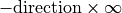
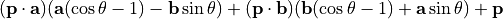
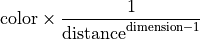
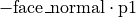

ntracer Package¶
__init__ Module¶
The names render.Color, render.Material,
render.Channel, render.ImageFormat,
render.CallbackRenderer, render.BlockingRenderer,
wrapper.NTracer, wrapper.CUBE and
wrapper.SPHERE are imported here for convenience.
render Module¶
-
class
BlockingRenderer([threads=-1])¶ A synchronous scene renderer.
By default, this class uses as many threads are the are processing cores. The scene can be drawn on any writable object supporting the buffer protocol.
signal_abort()can be called from another thread to quit drawing early.- Parameters
threads (integer) – The number of threads to use in addition to the thread from which it’s called. If -1, the number of extra threads will be one minus the number of processing cores of the machine.
-
signal_abort()¶ Signal for the renderer to quit and return immediately.
If the renderer isn’t running, this does nothing.
-
render(dest, format, scene) → boolean¶ Render
sceneontodest.If the renderer is already running on another thread, an exception is thrown instead. Upon starting, the scene will be locked for writing.
The return value will be
Trueunless the renderer quit before finishing because of a call tosignal_abort(), in which case the return value will beFalse.- Parameters
dest – An object supporting the buffer protocol to draw onto.
format (
ImageFormat) – The dimensions and pixel format ofdest.scene (
Scene) – The scene to draw.
-
class
CallbackRenderer([threads=0])¶ An asynchronous scene renderer.
By default, this class uses as many threads are the are processing cores. The scene can be drawn on any writable object supporting the buffer protocol (such as
bytearray) and a callback function is invoked when finished.- Parameters
threads (integer) – The number of threads to use. If zero, the number of threads will equal the number of processing cores of the machine.
-
abort_render()¶ Signal for the renderer to quit and wait until all drawing has stopped and the scene has been unlocked.
The callback function passed to
begin_render()will not be called if the renderer doesn’t finish drawing.If the renderer isn’t running, this does nothing.
-
begin_render(dest, format, scene, callback)¶ Begin rendering
sceneontodest.If the renderer is already running, an exception is thrown instead. Upon starting, the scene will be locked for writing.
- Parameters
dest – An object supporting the buffer protocol to draw onto.
format (
ImageFormat) – The dimensions and pixel format ofdest.scene (
Scene) – The scene to draw.callback – A function taking one parameter to call when rendering is done. The parameter will be the renderer itself.
-
class
Channel(bit_size, f_r, f_g, f_b[, f_c=0, tfloat=False])¶ A representation of a color channel.
This is used by
ImageFormatto specify how pixels are stored.All colors are computed internally using three 32-bit floating point numbers, representing red, green and blue. An instance of
Channelspecifies how to convert a color to a component of the destination format. For a given color “c”, the output will bef_r*c.r + f_g*c.g + f_b*c.b + f_cand is clamped between 0 and 1. Iftfloatis false, the value is multiplied by 2bit_size−1 and converted to an integer.Instances of this class are read-only.
- Parameters
bit_size (integer) – The number of bits the channel takes up. If
tfloatis false, it can be between 1 and 31. Iftfloatis true it must be 32.f_r (number) – The red factor.
f_g (number) – The green factor.
f_b (number) – The blue factor.
f_c (number) – A constant to add.
tfloat (boolean) – Whether the channel is stored as an integer or floating point number.
-
bit_size¶ The number of bits the channel takes up.
-
f_r¶ The red factor.
-
f_g¶ The green factor.
-
f_b¶ The blue factor.
-
f_c¶ A constant to add.
-
tfloat¶ Whether the channel is stored as an integer or floating point number.
-
class
ChannelList¶ The channels of an
ImageFormatobject.This class can not be instantiated directly in Python code.
-
__getitem__(index)¶ self.__getitem__(i)<==>self[i]
-
__len__()¶ self.__len__()<==>len(self)
-
-
class
Color(r, g, b)¶ A red-green-blue triplet specifying a color.
For each component, zero represents its minimum value and one represents its maximum value. Therefore,
Color(0,0,0)represents black,Color(1,1,1)represents white andColor(0,0,0.5)represents dark blue.Although values outside of 0-1 are allowed, they are clipped to the normal range when finally drawn. Such values will, however, affect how reflections and transparency are calculated.
Instances of this class are read-only.
- Parameters
r (number) – Red component
g (number) – Green component
b (number) – Blue component
-
__add__(b)¶ Element-wise addition of two colors.
self.__add__(y)<==>self+y
-
__div__(b)¶ Divide each element by a number or do element-wise division of two colors.
self.__div__(y)<==>self/y
-
__eq__(b)¶ self.__eq__(y)<==>self==y
-
__getitem__(index)¶ Equivalent to
[self.r,self.g,self.b].__getitem__.self.__getitem__(i)<==>self[i]
-
__len__()¶ This always returns 3.
self.__len__()<==>len(self)
-
__mul__(b)¶ Multiply each element by a number or do element-wise multiplication of two colors.
self.__mul__(y)<==>self*y
-
__ne__(b)¶ self.__ne__(y)<==>self!=y
-
__neg__()¶ Negate each element.
self.__neg__()<==>-self
-
__repr__()¶ self.__repr__()<==>repr(self)
-
__sub__(b)¶ Element-wise subtraction of two colors.
self.__sub__(y)<==>self-y
-
apply(f) → Color¶ Return a color with the given function applied to each component.
Equivalent to:
Color(*map(f,self))- Parameters
f – A function or callable object that takes one number and returns a number.
-
r¶ Red component
-
g¶ Green component
-
b¶ Blue component
-
class
ImageFormat(width, height, channels[, pitch=0, reversed=False])¶ The dimensions and pixel format of an image.
The pixel format is specified by one or more instances of
Channel. Each channel describes how to convert a red-green-blue triplet into the associated pixel component and has a bit size. When drawing a pixel, a renderer will write each component, one after the other without leaving any gaps. However, each pixel will start on a new byte. If the last byte is not completely covered by the channels, the remaining bits will be set to zero.The size of a pixel may not exceed 16 bytes (128 bits).
Some examples of pixel formats and their associated channel sequences:
24-bit RGB
[Channel(8,1,0,0), Channel(8,0,1,0), Channel(8,0,0,1)]32-bit RGBA with full alpha
[Channel(8,1,0,0), Channel(8,0,1,0), Channel(8,0,0,1), Channel(8,0,0,0,1)]16-bit 5-5-5 RGB (the last bit is unused)
[Channel(5,1,0,0), Channel(5,0,1,0), Channel(5,0,0,1)]16-bit 5-6-5 RGB
[Channel(5,1,0,0), Channel(6,0,1,0), Channel(5,0,0,1)]the native internal representation
[Channel(32,1,0,0,0,True), Channel(32,0,1,0,0,True), Channel(32,0,0,1,0,True)]digital YCRCB (ITU-R BT.601 conversion)
[Channel(8,0.299,0.587,0.114,0.0625), Channel(8,-0.147,-0.289,0.436,0.5), Channel(8,0.615,-0.515,-0.1,0.5)]16-bit brightness only
[Channel(16,0.299,0.587,0.114)]- Parameters
width (integer) – The width of the image in pixels.
height (integer) – The height of the image in pixels.
channels – An iterable containing one or more instances of
Channel, describing the bit layout of a pixel.pitch (integer) – The number of bytes per row. If zero is passed, it will be set to
widthtimes the byte width of one pixel (calculated fromchannels).reversed (boolean) – If true, the bytes of each pixel will be written in reverse order. This is needed if storing pixels as little-endian words and the channels don’t fit neatly into bytes.
-
set_channels(new_channels)¶ Replace the contents of
channels.- Parameters
channels – An iterable containing one or more instances of
Channel, describing the bit layout of a pixel.
-
width¶ The width of the image in pixels.
-
height¶ The height of the image in pixels.
-
channels¶ A read-only list-like object containing one or more instances of
Channel, describing the bit layout of a pixel.
-
pitch¶ The number of bytes per row.
-
reversed¶ If true, the bytes of each pixel will be written in reverse order (like a little-endian word).
-
bytes_per_pixel¶ The byte size of one pixel.
This is the sum of the bit sizes of the channels, rounded up.
This attribute is read-only.
-
class
LockedError(*args)¶ The exception thrown when attempting to modify a locked scene.
-
class
Material(color[, opacity=1, reflectivity=0, specular_intensity=1, specular_exp=8, specular_color=(1, 1, 1)])¶ Specifies how light will interact with a primitive.
- Parameters
color – An instance of
Coloror a tuple with three numbers.opacity (number) – A value between 0 and 1 specifying transparency.
reflectivity (number) – A value between 0 and 1 specifying reflectivity.
specular_intesity (number) – A value between 0 and 1 specifying the intensity of the specular highlight.
specular_exp (number) – The sharpness of the specular highlight.
specular_color – An instance of
Coloror a tuple with three numbers specifying the color of the specular highlight.
-
color¶ The diffuse color of the object.
-
opacity¶ A value between 0 and 1 specifying transparency.
0 mean completely transparent. 1 means completely opaque.
-
reflectivity¶ A value between 0 and 1 specifying reflectivity.
0 means does not reflect at all. 1 means 100% reflective. The color of the reflection is multiplied by
color, thus ifcoloris(1,0,0), the reflection will always be in shades of red.
-
specular_intensity¶ A value between 0 and 1 specifying the maximum intensity of the specular highlight.
-
specular_exp¶ A value greater than 0 specifying the sharpness of the specular highlight.
The higher the value, the smaller the highlight will be. A value of 0 would cause the specular highlight to cover the entire surface of the object at maximum intensity.
-
specular¶ The color of the specular highlight.
-
class
Scene¶ A scene that
Renderercan render.Although not exposed to Python code, the scene class has a concept of locking. While a renderer is drawing a scene, the scene is locked. While locked, a scene cannot be modified. Attempting to do so will raise a
LockedErrorexception.This cannot be instantiated in Python code, not even as a base class.
-
calculate_color(x, y, width, height) → Color¶ Get the pixel color at a particular coordinate.
Coordinate
0,0is the top left pixel andwidth-1,height-1is the bottom right.- Parameters
x (integer) – The horizontal coordinate component.
y (integer) – The vertical coordinate component.
width (integer) – The pixel width of the image.
height (integer) – The pixel height of the image.
-
-
get_optimized_tracern(dimension)¶ Return a specialized (read: faster) tracer{dimension} version if it exists, otherwise return
tracern.The results are cached, so calling this function multiple times with the same parameter is fast. The cache does not increase the reference count and unloaded modules automatically remove themselves from the cache.
tracern Module¶
The ray-tracing and geometry code and objects.
You are unlikely to need to import this module directly. It will be loaded by
wrapper.NTracer, which offers a more convenient interface.
Every function that takes a vector, can in addition to taking a
Vector object, take a tuple of numbers or a matrix row
(MatrixProxy). This however does not apply to operators (e.g. you
can’t add a tuple and a Vector together).
-
class
AABB(dimension[, start, end])¶ An axis-aligned bounding box.
This is not a displayable primitive, but is instead meant for spacial partitioning of the primitives.
- Parameters
dimension (integer) – The dimension of the box.
start (vector) – The lowest point of the box. It defaults to a vector where every element is set to the lowest finite value it can represent.
end (vector) – The highest point of the box. It defaults to a vector where every element is set to the highest finite value it can represent.
-
intersects(primitive) → boolean¶ Returns True if the box intersects the given object.
The object is only considered intersecting if some part of it is inside the box. Merely touching the box does not count.
- Parameters
primitive – The object to test intersection with. It must be an instance of
PrimitivePrototype, notPrimitive/PrimitiveBatch.
-
intersects_flat(primitive, skip) → boolean¶ Returns True if the box intersects the given simplex, ignoring one axis.
This method is identical to
intersects()except it only accepts instances ofTrianglePrototypeandTriangleBatchPrototypeand it disregards the axisskip. This is equivalent to testing against a simplex that has been extruded infinitely far in the positive and negative directions along that axis. The simplex or batch of simplexes must be flat along that axis (i.e.primitive.boundary.start[skip] == primitive.boundary.end[skip]must be true) for the return value to be correct.This method is needed when a simplex is completely embedded in a split hyperplane and thus would fail the normal intersection test with any bounding box that the hyperplane divides.
- Parameters
primitive – A simplex to test intersection with. It must be an instance of
TrianglePrototypeorTriangleBatchPrototype, notTriangle/TriangleBatch.skip (number) – The axis to disregard when testing.
-
left(axis, split) → AABB¶ Returns the lower part of this box split at
split, along axisaxis.Equivalent to:
AABB(self.start,self.end.set_c(axis,split))- Parameters
axis (integer) – The numeric index of the axis.
split (number) – The location along the axis of the split. It must be inside the box.
-
right(axis, split) → AABB¶ Returns the upper part of this box split at
split, along axisaxis.Equivalent to:
AABB(self.start.set_c(axis,split),self.end)- Parameters
axis (integer) – The numeric index of the axis.
split (number) – The location along the axis of the split. It must be inside the box.
-
dimension¶ The dimension of the box.
-
end¶ A vector specifying the maximum extent of the box.
-
start¶ A vector specifying the minimum extent of the box.
-
class
BoxScene(dimension)¶ Bases:
render.SceneA very simple scene containing one hypercube.
The hypercube is centered at the origin and has a width of 2 along every axis. It’s not much to look at but it renders really fast.
- Parameters
dimension (integer) – The dimension of the scene.
-
get_camera() → Camera¶ Return a copy of the scene’s camera.
-
set_camera(camera)¶ Set the scene’s camera to a copy of the provided value.
If the scene has been locked by a renderer, this function will raise a
render.LockedErrorexception instead.
-
set_fov(fov)¶ Set the field of vision.
If the scene has been locked by a renderer, this function will raise a
render.LockedErrorexception instead.- Parameters
fov – The new field of vision in radians.
-
dimension¶ The dimension of the scene.
This attribute is read-only.
-
fov¶ The scene’s horizontal field of vision in radians.
This attribute is read-only. To modify the value, use
set_fov().
-
locked¶ A boolean specifying whether or not the scene is locked.
This attribute cannot be modified in Python code.
-
class
Camera(dimension)¶ A “camera” that maintains a local set of axes.
Note that the classes that depend on this expect the axes to be orthogonal and unit, but this is not enforced. If, for example, you rotate one axis, you will need to rotate the others the same way. The method
normalize()is provided to correct small deviations.When rendering a scene, only the order of the first three axes matter. The first points right, the second up, and the third forward. Rays are cast from the origin of the camera onto a 2-dimensional image, forming a 3-dimension frustum.
- Parameters
dimension (integer) – The dimension of the camera.
-
normalize()¶ Adjust the values in
axesso that every value is a unit vector and is orthogonal to each other.The limited precision in floating point values means that every time the axes are transformed, they may deviate slightly in length and from being orthogonal. If multiple transformations are applied, the deviation can accumulate and become noticeable. This method will correct any deviation as long as all the axes remain linearly independent (otherwise the effect is undefined).
-
translate(offset)¶ Move the camera using the local coordinate space.
Given camera
c, this is equivalent tofor i in range(c.dimension): c.origin += c.axes[i] * offset[i].- Parameters
offset (vector) –
-
transform(m)¶ Rotate the camera using matrix
m.
-
axes¶ A sequence of vectors specifying the axes.
-
dimension¶ The dimension of the camera.
-
origin¶ A vector specifying the location of the camera.
-
class
CameraAxes¶ The axes of a
Cameraobject.This class can not be instantiated directly in Python code.
-
__getitem__(index)¶ self.__getitem__(i)<==>self[i]
-
__len__()¶ self.__len__()<==>len(self)
-
__setitem__(index, value)¶ self.__setitem__(i,v)<==>self[i]=v
-
-
class
CompositeScene(boundary, data)¶ Bases:
render.SceneA scene that displays the contents of a k-d tree.
You normally don’t need to create this object directly, but instead call
build_composite_scene().- Parameters
-
add_light(light)¶ Add a light to the scene.
The light will be added to
global_lightsorpoint_lightsaccording to its type.If the scene has been locked by a renderer, this method will raise a
render.LockedErrorexception instead.- Parameters
light – An instance of
GlobalLightorPointLight.
-
get_camera() → Camera¶ Return a copy of the scene’s camera.
-
set_ambient_color(color)¶ Set the value of
ambient_colorIf the scene has been locked by a renderer, this method will raise a
render.LockedErrorexception instead.- Parameters
color – An instance of
render.Coloror a tuple with three numbers.
-
set_background(c1[, c2=c1, c3=c1, axis=1])¶ Set the values of
bg1,bg2,bg3andbg_gradient_axis.If the scene has been locked by a renderer, this method will raise a
render.LockedErrorexception instead.- Parameters
c1 (color) – The new value for
bg1.c2 (color) – The new value for
bg2.c3 (color) – The new value for
bg3.axis (integer) – The new value for
bg_gradient_axis. This must be a value between 0 and dimension−1.
-
set_camera(camera)¶ Set the scene’s camera to a copy of the provided value.
If the scene has been locked by a renderer, this method will raise a
render.LockedErrorexception instead.- Parameters
camera – An instance of
Camera.
-
set_camera_light(camera_light)¶ Set the value of
camera_lightIf the scene has been locked by a renderer, this method will raise a
render.LockedErrorexception instead.- Parameters
camera_light (boolean) – The new value.
-
set_fov(fov)¶ Set the field of vision.
If the scene has been locked by a renderer, this method will raise a
render.LockedErrorexception instead.- Parameters
fov (number) – The new field of vision in radians.
-
set_max_reflect_depth(depth)¶ Set the value of
max_reflect_depth.If the scene has been locked by a renderer, this method will raise a
render.LockedErrorexception instead.- Parameters
depth (integer) – The new value.
-
set_shadows(shadows)¶ Set the value of
shadowsIf the scene has been locked by a renderer, this method will raise a
render.LockedErrorexception instead.- Parameters
shadows (boolean) – The new value.
-
ambient_color¶ The color of the ambient light.
This light reaches all geometry unconditionally.
The default value is
Color(0,0,0).This attribute is read-only. To modify the value, use
set_ambient_color().
-
bg_gradient_axis¶ The index of the axis along which the three color gradient of the background will run.
The default value is 1, corresponding to the y-axis.
This attribute is read-only. To modify the value, use
set_background().
-
bg1¶ The first color of the three color gradient of the background.
The default value is
Color(1,1,1).This attribute is read-only. To modify the value, use
set_background().
-
bg2¶ The middle color of the three color gradient of the background.
The default value is
Color(0,0,0).This attribute is read-only. To modify the value, use
set_background().
-
bg3¶ The last color of the three color gradient of the background.
The default value is
Color(0,1,1).This attribute is read-only. To modify the value, use
set_background().
-
camera_light¶ A boolean specifying whether surfaces will be lit if they face the camera.
This is equivalent to having an instance of
GlobalLightwithGlobalLight.colorset toColor(1,1,1)andGlobalLight.directionset to the direction that the camera is facing, except this light never casts shadows.The default value is
True.This attribute is read-only. To modify the value, use
set_camera_light().
-
dimension¶ The dimension of the scene.
This attribute is read-only.
-
fov¶ The scene’s horizontal field of vision in radians.
This attribute is read-only. To modify the value, use
set_fov().
-
global_lights¶ A list-like object containing intances of
GlobalLight.See
GlobalLightListfor details.
-
locked¶ A boolean specifying whether or not the scene is locked.
This attribute is read-only.
-
max_reflect_depth¶ The maximum number of times a ray is allowed to bounce.
The default value is 4.
Recursive reflections require shooting rays multiple times per pixel, thus lower values can improve performance at the cost of image quality. A value of 0 disables reflections altogether.
This attribute is read-only. To modify the value, use
set_max_reflect_depth().
-
point_lights¶ A list-like object containing instances of
PointLight.See
PointLightListfor details.
-
root¶ The root node of a k-d tree.
This attribute is read-only.
-
shadows¶ A boolean specifying whether objects will cast shadows.
Note: this only applies to lights explicitly added, not the default camera light (see
camera_light).The default value is
False.This attribute is read-only. To modify the value, use
set_shadows().
-
class
FrozenVectorView¶ A read-only sequence of vectors.
This class cannot be instantiated directly in Python code.
-
__getitem__(index)¶ self.__getitem__(i)<==>self[i]
-
__len__()¶ self.__len__()<==>len(self)
-
-
class
GlobalLight(direction, color)¶ A light whose source is infinitely far from the scene’s origin.
This is an approximation of a distant light source such as the sun.
- Parameters
direction (vector) – The direction that the light’s rays travel (i.e. the light will be located at ).
color – The light’s color. This can be an instance of
render.Coloror a tuple with three numbers.
-
color¶ The light’s color.
-
direction¶ The direction that the light’s rays travel (i.e. the light source will be located at ).
-
class
GlobalLightList¶ An array of
GlobalLightobjects.An instance of this class is tied to a specific
CompositeSceneinstance. Any attempt to modify an instance of this class while the scene is locked will cause an exception to be raised.Since the order of lights is not important, when deleting an element, instead of shifting all subsequent elements back, the gap is filled with the last element (unless the last element is the one being deleted).
This class cannot be instantiated directly in Python code.
-
__getitem__(index)¶ self.__getitem__(i)<==>self[i]
-
__len__()¶ self.__len__()<==>len(self)
-
__setitem__(index, value)¶ self.__setitem__(i,v)<==>self[i]=v
-
append(light)¶ Add a light.
-
extend(lights)¶ Add lights from an iterable object.
-
-
class
KDBranch(axis, split[, left=None, right=None])¶ Bases:
KDNodeA k-d tree branch node.
One of
leftandrightmay beNone, but not both.Note
In order to minimize the amount of space that k-d tree nodes take up in memory (and therefore maximize the speed at which they can be traversed), the nodes are not stored internally as Python objects nor contain references to their Python representations. Accessing
leftorrightwill cause a new Python object to be created each time, to encapsulate the child node, therefore e.g. given noden: the satement “n.left is n.left” will evaluate toFalse.- Parameters
-
axis¶ The axis that the split hyper-plane is perpendicular to.
-
dimension¶ The dimension of the branch’s nodes.
-
left¶ The left node (< split) or
None.
-
right¶ The right node (>= split) or
None.
-
split¶ The location along the axis where the split occurs.
-
class
KDLeaf(primitives)¶ Bases:
KDNodeA k-d tree leaf node.
This acts as a container for one or more primitives.
Instances of this class are read-only.
- Parameters
primitives (iterable) – An iterable of
Primitiveobjects. IfBATCH_SIZEis greater than1, the iterable can also yield instances ofPrimitiveBatch.
-
__getitem__(index)¶ Return the
index’th primitive or primitive batch.Note that the order the primitives/batches are stored in will not necessarily match the order given to the constructor.
self.__getitem__(i)<==>self[i]
-
__len__()¶ self.__len__()<==>len(self)
-
dimension¶ The dimension of the primitives.
All the primitives are required to have the same dimension.
-
class
KDNode¶ A k-d tree node.
This class cannot be instantiated directly in Python code.
-
intersects(origin, direction[, t_near, t_far, source, batch_index]) → list¶ Tests whether a given ray intersects.
The return value is a list containing an instance of
RayIntersectionfor every intersection that occured. Multiple intersections can occur when the ray passes through primitives that have an opacity of less than one. If an opaque primitive is intersected, it will always be the last element and have the greatest distance, but every other element will be in an arbitrary order and may contain duplicates (this can happen when a primitive crosses a split pane). If no intersection occurs, the return value will be an empty list.- Parameters
origin (vector) – The origin of the ray.
direction (vector) – The direction of the ray.
t_near (number) –
t_far (number) –
source (
PrimitiveorPrimitiveBatch) – A primitive that will not be considered for intersection.batch_index (integer) – The index of the primitive inside the primitive batch to ignore intersection with. If
sourceis not an instance ofPrimitiveBatch, this value is ignored.
-
occludes(origin, direction[, distance, t_near, t_far, source, batch_index]) → tuple¶ Test if
origin + direction*distanceis occluded by any primitives.If an opaque object exists at any point along
distance, the return value is(True,None). Otherwise the return value is a tuple containingFalseand a list containing an instance ofRayIntersectionfor every non-opaque primitive found alongdistance. The elements will be in an arbitrary order and may contain duplicates (this can happen when a primitive crosses a split pane).- Parameters
origin (vector) – The origin of the ray.
direction (vector) – The direction of the ray.
distance (number) – How far out to check for intersections.
t_near (number) –
t_far (number) –
source (
PrimitiveorPrimitiveBatch) – A primitive that will not be considered for intersection.batch_index (integer) – The index of the primitive inside the primitive batch to ignore intersection with. If
sourceis not an instance ofPrimitiveBatch, this value is ignored.
-
-
class
Matrix(dimension, values)¶ A square matrix.
Instances of this class are read-only.
- Parameters
dimension (integer) – The dimension of the matrix.
values – Either a sequence of
dimensionsequences ofdimensionnumbers or a sequence ofdimension2 numbers.
-
__getitem__(index)¶ self.__getitem__(i)<==>self[i]The elements of
Matrixare its rows.
-
__len__()¶ Returns the number of rows.
This is always equal to
dimension.self.__len__()<==>len(self)
-
__mul__(b)¶ self.__mul__(y)<==>self*y
-
determinant() → float¶ Compute the determinant of the matrix.
-
inverse() → Matrix¶ Compute the inverse of the matrix.
If the matrix is singular (cannot be inverted), an exception is thrown.
-
transpose() → Matrix¶ Return the transpose of the matrix.
-
static
identity(dimension) → Matrix¶ Create an identity matrix.
- Parameters
dimension – The dimension of the new matrix.
-
static
reflection(axis) → Matrix¶ Create a reflection matrix.
The refection is by a hyperplane perpendicular to
axisthat passes through the origin.- Parameters
axis (vector) – The axis to reflect along.
-
static
rotation(a, b, theta) → Matrix¶ Create a rotation matrix along the plane defined by the linearly-independent vectors:
aandb.The ability to unambiguously describe a plane with one vector is only present in 3-space, thus instead of taking one perpendicular vector, this method takes two coplanar vectors.
The resulting matrix
Mis such thatM * pis equal to:
- Parameters
a (vector) –
b (vector) –
theta (number) – The rotation amount in radians.
-
static
scale(...) → Matrix¶ Creates a scale matrix.
This method takes either two numbers or one vector. If numbers are supplied, the numbers must be the dimension of the matrix followed by a magnitude, and the return value will be a uniform scale matrix. If a vector is supplied, a non-uniform scale matrix will be returned, where the vector components will correspond to the scaling factors of each axis.
-
dimension¶ The dimension of the matrix.
-
values¶ All the matrix elements as a flat sequence
-
class
MatrixProxy¶ A sequence of matrix values.
This type is returned by
Matrix.__getitem__()andMatrix.values.This class cannot be instantiated directly in Python code.
-
__getitem__(index)¶ self.__getitem__(i)<==>self[i]
-
__len__()¶ self.__len__()<==>len(self)
-
-
class
PointLight(position, color)¶ A light source that emits light uniformly in every direction from a given point.
colorrepresents not only the light’s color, but its brightness, too, thus itsrgbcomponents may be much greater than 1.The intensity of the light at a given point depends on the distance from
positionand is given by the formula:
- Parameters
position (vector) – The position of the light.
color – The light’s color multiplied by its brightness. This can be an instance of
render.Coloror a tuple with three numbers.
-
color¶ The light’s color multiplied by its brightness.
-
position¶ The position of the light.
-
class
PointLightList¶ An array of
PointLightobjects.An instance of this class is tied to a specific
CompositeSceneinstance. Any attempt to modify an instance of this class while the scene is locked will cause an exception to be raised.Since the order of lights is not important, when deleting an element, instead of shifting all subsequent elements back, the gap is filled with the last element (unless the last element is the one being deleted).
This class cannot be instantiated directly in Python code.
-
__getitem__(index)¶ self.__getitem__(i)<==>self[i]
-
__len__()¶ self.__len__()<==>len(self)
-
__setitem__(index, value)¶ self.__setitem__(i,v)<==>self[i]=v
-
append(light)¶ Add a light.
-
extend(lights)¶ Add lights from an iterable object.
-
-
class
Primitive¶ A geometric primitive that can be used to construct scenes for the ray-tracer.
Descendants of this class are used in highly optimized multi-threaded C++ code, thus this class cannot be instantiated directly in Python code, not even as a base class for another class.
-
intersects(origin, direction) → RayIntersection or None¶ Tests whether a given ray intersects.
If the ray intersects with the object, an instance of
RayIntersectionis returned with the details of the intersection. Otherwise, the return value isNone.- Parameters
origin – The origin of the ray.
direction – The direction of the ray.
-
material¶ The material of the primitive.
-
-
class
PrimitiveBatch¶ A batch of primitives with data rearranged for faster computation.
-
intersects(origin, direction, index) → RayIntersection or None¶ Tests whether a given ray intersects.
If the ray intersects with the object, an instance of
RayIntersectionis returned with the details of the intersection. Otherwise, the return value isNone.- Parameters
origin – The origin of the ray.
direction – The direction of the ray.
index (integer) – The index specifying which primitive in the batch should not be considered for intersection, or
-1if all primitives should be considered.
-
material¶ A read-only sequence containing the materials of the primitives.
-
-
class
PrimitivePrototype¶ A primitive with extra data needed for quick spacial partitioning.
This class cannot be instantiated directly in Python code.
-
primitive¶ The corresponding
PrimitiveorPrimitiveBatch.
-
-
class
RayIntersection(dist, origin, normal, primitive[, batch_index=-1])¶ The details of an intersection between a ray and a primitive.
Instances of this class are read-only.
- Parameters
dist (number) – The distance between the origin of the ray and the point of intersection.
origin (vector) – The point where the ray intersected the primitive.
normal (vector) – The normal of the surface of the primitive at the point of intersection.
primitive – The
PrimitiveorPrimitiveBatchthat the ray intersected.batch_index (integer) – The index indicating which primitive in the batch was intersected or
-1if the primitive is not an instance ofPrimitiveBatch.
-
dist¶ The distance between the origin of the ray and the point of intersection.
-
origin¶ The point where the ray intersected the primitive.
-
normal¶ The normal of the surface of the primitive at the point of intersection.
-
primitive¶ The
PrimitiveorPrimitiveBatchthat the ray intersected.
-
batch_index¶ The index indicating which primitive in the batch was intersected.
If
primitiveis not an instance ofPrimitiveBatchthen this will have a value of-1.
-
class
Solid(type, position, orientation, material)¶ Bases:
PrimitiveA non-flat geometric primitive.
It is either a hypercube or a hypersphere.
Instances of this class are read-only.
- Parameters
type – The type of solid: either
wrapper.CUBEorwrapper.SPHERE.position (vector) – The position of the solid.
orientation (
Matrix) – A transformation matrix. The matrix must be invertable.material (
render.Material) – A material to apply to the solid.
-
dimension¶ The dimension of the solid.
-
inv_orientation¶ The inverse of
orientation
-
orientation¶ A transformation matrix applied to the solid.
-
position¶ A vector specifying the position of the solid.
-
type¶ The type of solid: either
wrapper.CUBEorwrapper.SPHERE
-
class
SolidPrototype(type, position, orientation, material)¶ Bases:
PrimitivePrototypeA solid with extra data needed for quick spacial partitioning.
Instances of this class are read-only.
- Parameters
type – The type of solid: either
wrapper.CUBEorwrapper.SPHERE.position (vector) – The position of the solid.
orientation (
Matrix) – A transformation matrix. The matrix must be invertable.material (
render.Material) – A material to apply to the solid.
-
dimension¶ The dimension of the solid.
-
inv_orientation¶ The inverse of
orientation
-
material¶ The material of the primitive.
-
orientation¶ A transformation matrix applied to the solid.
-
position¶ A vector specifying the position of the solid.
-
type¶ The type of solid: either
wrapper.CUBEorwrapper.SPHERE.
-
class
Triangle(p1, face_normal, edge_normals, material)¶ Bases:
PrimitiveA simplex of codimension 1.
Note: it is unlikely that you will need to call this constructor directly. It requires very specific values that
from_points()can calculate for you.Despite the name, this is only a triangle in 3-space. Although this serves as an analogue to a triangle. Even with more than 3 dimensions, this shape is always flat. Rays will intersect the body of the simplex and not it’s perimeter/hull.
Instances of this class are read-only.
- Parameters
p1 (vector) –
face_normal (vector) –
edge_normals (iterable) –
material (
render.Material) – A material to apply to the simplex.
-
static
from_points(points, material) → Triangle¶ Create a
Triangleobject from the vertices of the simplex.- Parameters
points – A sequence of vectors specifying the vertices. The number of vectors must equal their dimension.
material (
render.Material) – A material to apply to the simplex.
-
to_points() → tuple¶ Calculate the vertices of the simplex.
If the simplex was created from vertices, it’s better to save those vertices than to recalculate them with this method. The values returned by this method will not be exactly the same as those supplied to
from_points(), do to limited precision.
-
d¶ A value that equals 
This is simply a pre-computed value needed by the ray-tracer.
-
dimension¶ The dimension of the simplex’s coordinates.
This is always one greater than the dimension of the simplex. It corresponds to the dimension of the space it can occupy.
-
edge_normals¶ The normals of the “edges” adjacent to
p1.Here, “edge” actually means a simplex of codimension 2. This attribute is a list-like object containing the normals of every “edge” except for the one on the opposite side of
p1. Each normal has a length equal to the inverse of the altitude of the “triangle”, where the “edge” is the base of the “triangle”. The normals point away from the “triangle”.
-
face_normal¶ The normal of the “triangle”.
If
pointsis the list of vectors representing each point of this “triangle”, thenface_normalis equal tocross([p - points[0] for p in points[1:]]).
-
p1¶ A vertex of the simplex.
Due to the way the ray-simplex intersection code works, this is the only point that’s kept.
-
class
TriangleBatch(triangles)¶ Bases:
PrimitiveBatchA batch of simplexes with data rearranged for faster computation.
Instances of this class are read-only.
- Parameters
triangles – An iterable yielding exactly
BATCH_SIZEinstances ofTriangle
-
__getitem__(index)¶ Extract the
index’th simplex.self.__getitem__(i)<==>self[i]
-
__len__()¶ Return the number of simplexes in the batch.
This is always equal
BATCH_SIZE.self.__len__()<==>len(self)
-
class
TriangleBatchPointData¶ A read-only sequence of
TriangleBatchPointDatuminstances.Instances of this class are read-only. This class cannot be instantiated directly in Python code.
-
__getitem__(index)¶ self.__getitem__(i)<==>self[i]
-
__len__()¶ self.__len__()<==>len(self)
-
-
class
TriangleBatchPointDatum¶ Instances of this class are read-only. This class cannot be instantiated directly in Python code.
-
edge_normal¶
-
point¶ Vertices of a batch of simplexes.
-
-
class
TriangleBatchPrototype(t_prototypes)¶ Bases:
PrimitivePrototypeA batch of simplexes with extra data needed for quick spacial partitioning.
This is the batch equivalent to
TrianglePrototypeInstances of this class are read-only.
- Parameters
t_prototypes – An iterable yielding exactly
BATCH_SIZEinstances ofTrianglePrototype. Alternatively, this can be an instance ofTriangleBatchbut this is not the recommended way of creating instanced of this class.
-
dimension¶ The dimension of the simplexes.
This is a single value since the simplexes must all have the same dimension.
-
face_normal¶
-
point_data¶
-
class
TrianglePointData¶ A read-only sequence of
TrianglePointDatuminstances.Instances of this class are read-only. This class cannot be instantiated directly in Python code.
-
__getitem__(index)¶ self.__getitem__(i)<==>self[i]
-
__len__()¶ self.__len__()<==>len(self)
-
-
class
TrianglePointDatum¶ Instances of this class are read-only. This class cannot be instantiated directly in Python code.
-
edge_normal¶
-
point¶ A simplex vertex.
-
-
class
TrianglePrototype(points[, material])¶ Bases:
PrimitivePrototypeA simplex with extra data needed for quick spacial partitioning.
Unlike the
Triangleclass, this keeps the vertices that make up the simplex.Instances of this class are read-only.
- Parameters
points – A sequence of vectors specifying the vertices of the simplex. The number of vectors must equal their dimension. Alternatively, this can be an instance of
Trianglebut this is not the recommended way of creating instanced of this class.material (
render.Material) – A material to apply to the simplex. Ifpointsis an instance ofTriangle, this parameter must beNoneor omitted. Otherwise it is required.
-
dimension¶ Has the same meaning as
Triangle.dimension.
-
face_normal¶
-
point_data¶
-
class
Vector(dimension[, values])¶ A vector class for representing positions and directions.
Instances of this class are read-only.
- Parameters
dimension (integer) – The dimension of the vector.
values – A sequence of
dimensionnumbers. If omitted, all elements of the vector will be zero.
-
__abs__()¶ Return the magnitude of the vector.
This is the same as
absolute().self.__abs__()<==>abs(self)
-
__add__(b)¶ self.__add__(y)<==>self+y
-
__div__(b)¶ Divide every element of the vector by
b.self.__div__(y)<==>self/y
-
__eq__(b)¶ self.__eq__(y)<==>self==y
-
__getitem__(index)¶ self.__getitem__(i)<==>self[i]
-
__mul__(b)¶ Multiply every element of the vector with
b.This is only for scalar products. For vector products, see
dot()andcross().self.__mul__(y)<==>self*y
-
__ne__(b)¶ self.__ne__(y)<==>self!=y
-
__neg__()¶ self.__neg__()<==>-self
-
__repr__()¶ self.__repr__()<==>repr(self)
-
__str__()¶ self.__str__()<==>str(self)
-
__sub__(b)¶ self.__sub__(y)<==>self-y
-
apply(f) → Vector¶ Return a vector with the given function applied to each value.
Equivalent to:
Vector(self.dimension,map(f,self))- Parameters
f – A function or callable object that takes one number and returns a number.
-
set_c(index, value) → Vector¶ Return a copy of the vector with the
index’th item replaced withvalue.
-
square() → float¶ Return the magnitude squared of the vector.
Equivalent to:
dot(self,self)
-
unit() → Vector¶ Return the corresponding unit vector.
Equivalent to:
self / self.absolute()
-
static
axis(dimension, axis[, length=1]) → Vector¶ Create an axis vector.
Every element of the vector will be zero, except the element at
axis, which will belength.
-
dimension¶ The dimension of the vector.
-
class
VectorBatch¶ A batch of vectors with data rearranged for faster computation.
Instances of this class are read-only. This class cannot be instantiated directly in Python code.
-
__getitem__(index)¶ Extract the
index’th vector from the batch.self.__getitem__(i)<==>self[i]
-
__len__()¶ Return the number of vectors in the batch.
This should not be confused with the length of the vectors themselves.
This is always equal to
BATCH_SIZE.self.__len__()<==>len(self)
-
-
build_composite_scene(primitives[, extra_threads=-1, *, update_primitives=False]) → CompositeScene¶ Create a scene from a sequence of
PrimitivePrototypeinstances.If
BATCH_SIZEis greater than1, instances ofTrianglePrototypewill be automatically merged into instances ofTriangleBatchPrototype. IfBATCH_SIZEis equal to1, thenprimitivescannot contain any instances ofTriangleBatchPrototype.By default, this will use all available processing cores to build the scene, but this can be controlled by passing a non-negative integer to
extra_threads(a value of zero would make it run single-threaded). Note that fewer threads may be used if the resulting k-d tree is too shallow.- Parameters
primitives (iterable) – One or more instances of
PrimitivePrototype.extra_threads (integer) – How many extra threads to use or -1 to use as many extra threads as there are extra processing cores.
update_primitives (boolean) – If true, primitives must be an instance of
listand will be updated to contain the actual primitive prototypes used, with theTriangleBatchPrototypeinstances added and with their un-batched counterparts removed.
-
build_kdtree(primitives[, extra_threads=-1, *, update_primitives=False]) → tuple¶ Create a k-d tree from a sequence of
PrimitivePrototypeinstances.The return value is a tuple containing an instance of
AABBfollowed by the root node of k-d tree (an instance ofKDNode). TheAABBencloses all the primitives fromprimitives. The tuple’s values can be passed directly toCompositeScene(which is exactly whatbuild_composite_scene()does).If
BATCH_SIZEis greater than1, instances ofTrianglePrototypewill be automatically merged into instances ofTriangleBatchPrototype. IfBATCH_SIZEis equal to1, thenprimitivescannot contain any instances ofTriangleBatchPrototype.By default, this will use all available processing cores to build the tree, but this can be controlled by passing a non-negative integer to
extra_threads(a value of zero would make it run single-threaded). Note that fewer threads may be used if the resulting tree is too shallow.- Parameters
primitives (sequence) – One or more instances of
PrimitivePrototype.extra_threads (integer) – How many extra threads to use or -1 to use as many extra threads as there are extra processing cores.
update_primitives (boolean) – If true, primitives must be an instance of
listand will be updated to contain the actual primtive prototypes used, with theTriangleBatchPrototypeinstances added and with their un-batched counterparts removed.
-
cross(vectors) → Vector¶ A generalized cross product.
This returns a vector that is perpendicular to every vector in
vectors. The magnitude is equal to the volume of the parallelotope (the generalized version of the parallelepiped) that the vectors span.- Parameters
vectors – A sequence of linearly independent vectors. The number of vectors must be one less than their dimension.
-
dot(a, b) → float¶ Compute the dot product of two vectors.
-
screen_coord_to_ray(cam, x, y, w, h, fov) → Vector¶ Create the same direction vector for camera
cam, thatBoxSceneandCompositeScenecreate when callingrender.Scene.calculate_color().- Parameters
cam (
Camera) – The camera.x (float) – The x coordinate.
y (float) – The y coordinate.
w (integer) – The width.
h (integer) – The height.
fov (float) – The vertical field of view in radians.
-
BATCH_SIZE¶ The number of objects that batch objects group.
On hardware that has SIMD registers, certain operations can be performed more efficiently if data from multiple objects is rearranged so that every numeric value is followed the equivalent value in the next object, up to the number of values that a SIMD register can hold, thus the existence of “batch” objects. This constant refers to the number of non-batch objects that a batch object is equivalent to, as well as the number of floating-point values that the largest SIMD register can hold. Note that even if run on a machine that has larger registers, the ray tracer will only be able to take advantage of the largest registers of the instruction set that this package was compiled for (when compiling from source, the latest instruction set that the current machine supports, is chosen by default).
The source code of this package supports SSE and AVX (including AVX2 and AVX512). If this package is compiled for an instruction set that supports neither of these technologies,
BATCH_SIZEwill be equal to1. In such a case,KDLeafwon’t support instances ofPrimitiveBatch(passing instances ofPrimitiveBatchto its constructor will cause an exception to be raised) so that the ray tracer can be streamlined. The batch classes will still exist, however, for the sake of compatibility.Most users will not have to worry about the value of
BATCH_SIZEor batch objects sincebuild_composite_scene()(andbuild_kdtree()) will automatically combine instances ofTrianglePrototypeintoTriangleBatchPrototypewhen beneficial.
wrapper Module¶
-
class
NTracer(dimension)¶ A helper class that simplifies the creation of multiple objects with the same dimension.
An instance contains all the same values that
tracernhas, except every class that has a method with adimensionparameter is subclassed so that parameter is filled in automatically. Additionally, the constructors fortracern.Vectorandtracern.Matrixare modified to accept multiple parameters as an alternative to a sequence of values. e.g.:NTracer(3).Vector([1,2,3])can also be written asNTracer(3).Vector(1,2,3).An instance of
NTracerimports from a specialized (read: faster) tracer{dimension} version if it exists, and falls back totracernotherwise.Instances of
NTracerare cached, so invokingNTracerwhile another instance with the same dimension already exists, will simply give you the first instance (unlessforce_genericis given a value ofTrue).- Parameters
dimension (integer) – The value that will be automatically given to any function/method/constructor that requires a
dimensionparameter.force_generic (boolean) – If
True,tracernwill be used even if a specialized version exists. This is mainly for testing.
-
CUBE¶ A constant that can be passed to
tracern.Solid’s constructor to create a hypercube.
-
SPHERE¶ A constant that can be passed to
tracern.Solid’s constructor to create a hypersphere.
pygame_render Module¶
-
class
PygameRenderer(threads=0)¶ Bases:
render.CallbackRendererA renderer for Pygame surfaces.
The scene is drawn onto a pygame.Surface object and upon completion, sends a Pygame event of type
ON_COMPLETEwith asourceattribute set to the instance of the renderer, andsurfaceandsceneattributes with the surface and scene that were passed tobegin_render().Note: the renderer does not honor clipping areas or subsurface boundaries (it will always draw onto the entire surface) and indexed color modes (all 8-bit color modes are indexed) are not supported.
- Parameters
threads (integer) – The number of threads to use. If zero, the number of threads will equal the number of processing cores of the machine.
-
begin_render(surface, scene)¶ Begin rendering
sceneontodest.If the renderer is already running, an exception is thrown instead. Upon starting, the scene will be locked for writing.
- Parameters
dest (pygame.Surface) – A surface to draw onto.
scene (
render.Scene) – The scene to draw.
-
ON_COMPLETE¶ The Pygame event type that will be sent when rendering is finished.
This is set to
pygame.USEREVENTinitially, but can be set to any value betweenpygame.USEREVENTandpygame.NUMEVENTSto avoid conflicts with other producers of events.
-
channels_from_surface(surface)¶ Create a list of
render.Channelobjects that match the pixel format ofsurface.Note: indexed color modes (all 8-bit color modes are indexed) are not supported.
- Parameters
surface –
An instance of pygame.Surface.
tracer3, tracer4, tracer5, ... Modules¶
Depending on how this package was built, there will be one or more modules
that start with “tracer” and end in a number (by default, one for every number
between 3 and 8 inclusive). These have an interface identical to
tracern, including the dimension parameter of certain functions,
but are specialized for the dimensionality corresponding to the number in its
name. For functions that require a dimension parameter, passing a number
other than the one its specialized for, will raise an exception.
By only supporting a single dimensionality, these specialized modules avoid the looping and heap-allocation that the generic version requires and thus perform significantly faster.
To save space, the modules corresponding to dimensionalities you don’t need, or even all the specialized modules, can be deleted with no loss of functionality. This package can also work without the generic version, using only specialized versions, but you would only be able to use those particular dimensionalities.
Classes that support pickling result in the exact same output, regardless of whether the specialized or generic versions were used when pickled. When unpickled, the specialized versions are used when available.
Note that equivalent types between the generic and specific versions are not
compatible with each other (e.g. an instance tracern.Vector cannot be added
to an instance of tracer3.Vector even if they have the same dimension).